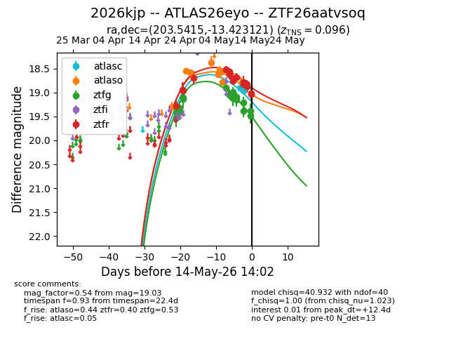
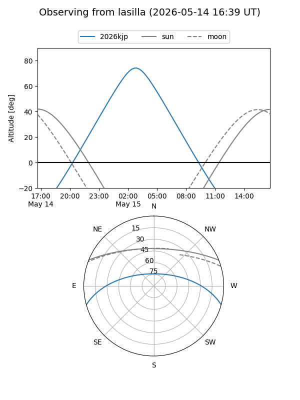
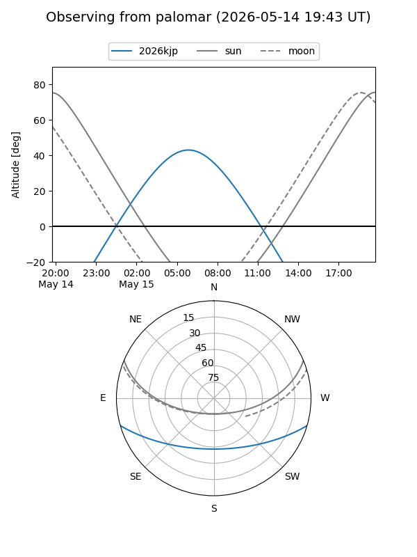
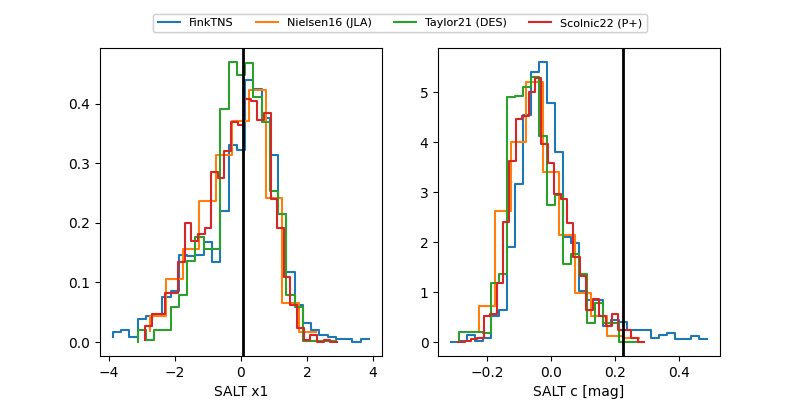

2026kjp
Target 2026kjp at 2026-05-14 14:04
Aliases and brokers:
FINK: link
Lasair: link
ALeRCE: link
TNS: link
YSE: link
alt names
ZTF26aatvsoq (ztf,fink_ztf)
2026kjp (tns,yse)
ATLAS26eyo (atlas)
Coordinates:
equatorial (ra, dec) = 203.5415,-13.42312
equatorial (HMS+DMS) = 13:34:09.97,-13:25:23.24
galactic (l, b) = (318.6081,+48.14381)
Flags:
confirmed ia
Photometry:
last atlasc=18.97, atlaso=18.66, ztfg=19.38, ztfr=19.03
2 atlasc, 10 atlaso, 16 ztfg, 16 ztfr detections
Lightcurve

Visibility


Additional plots
